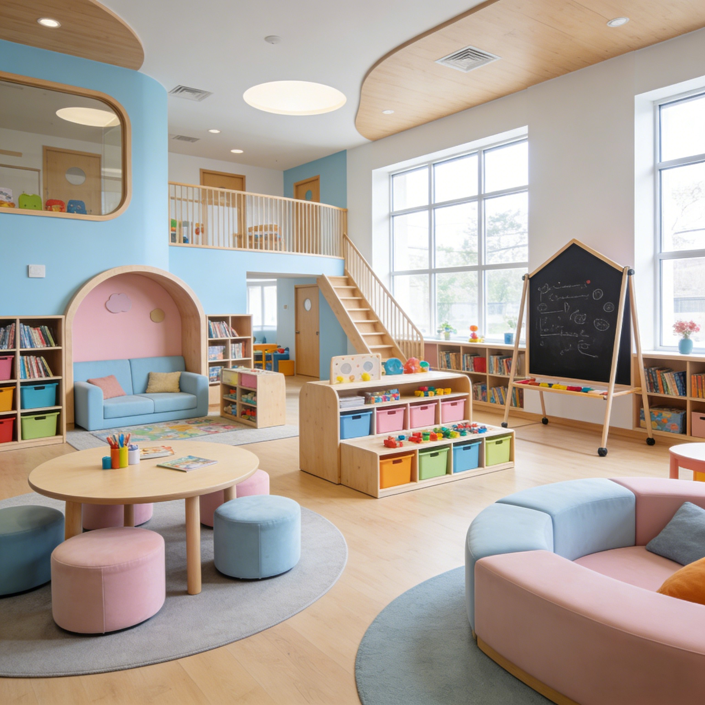
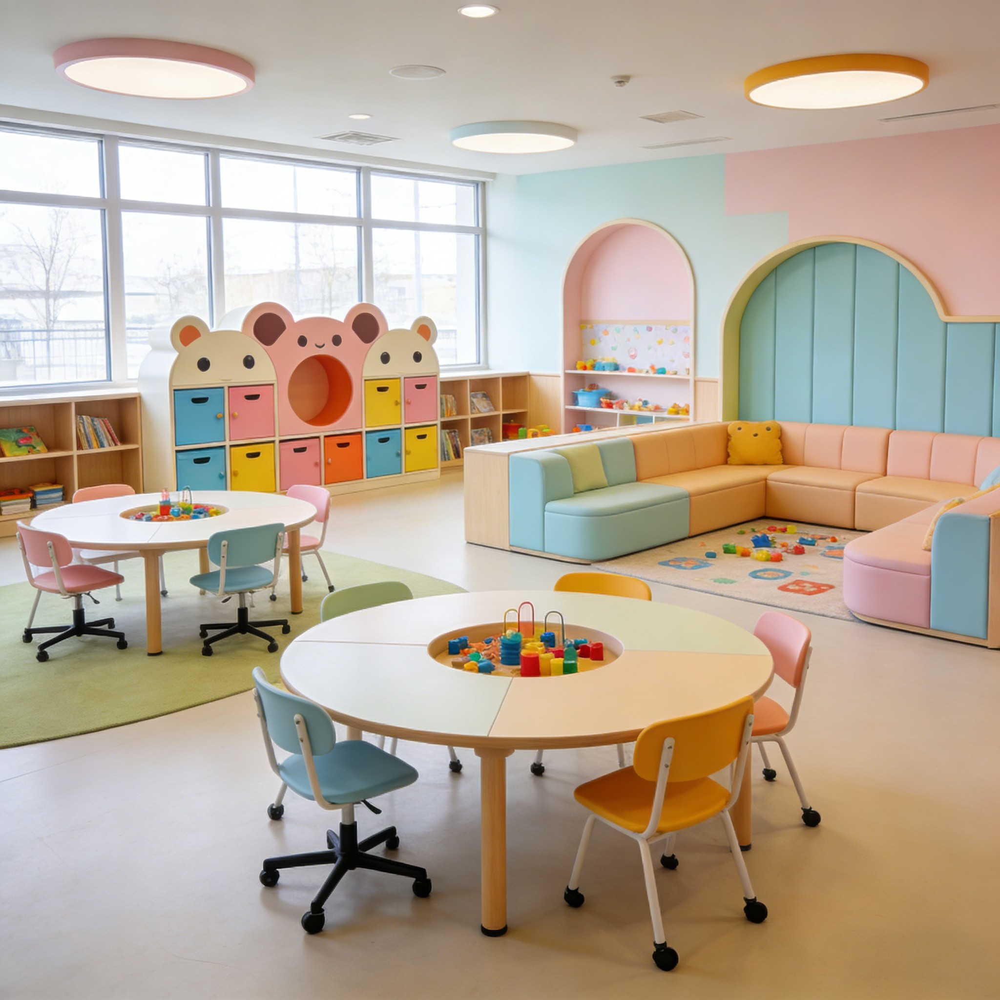
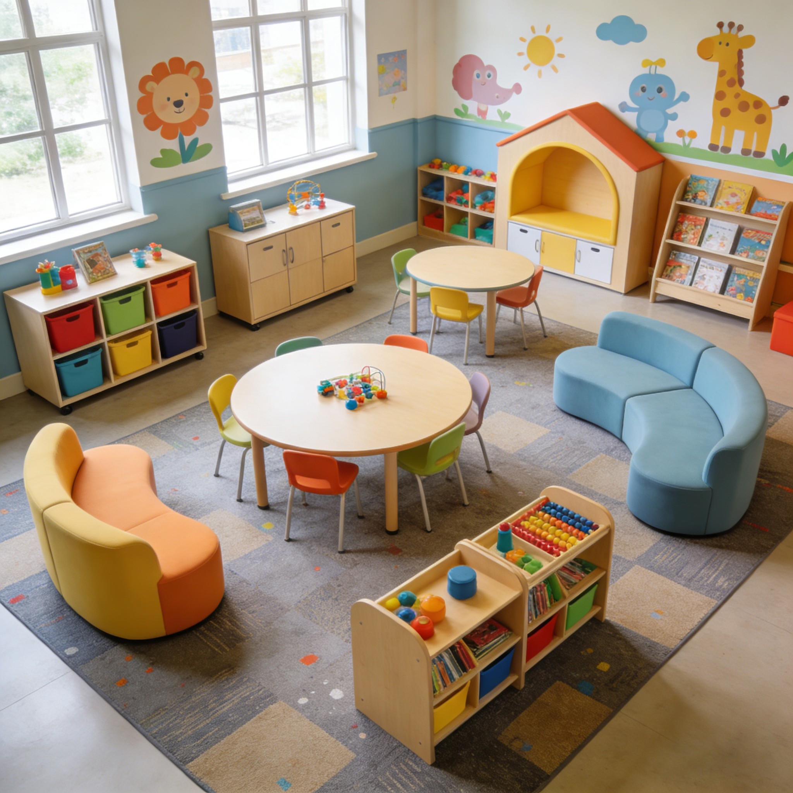
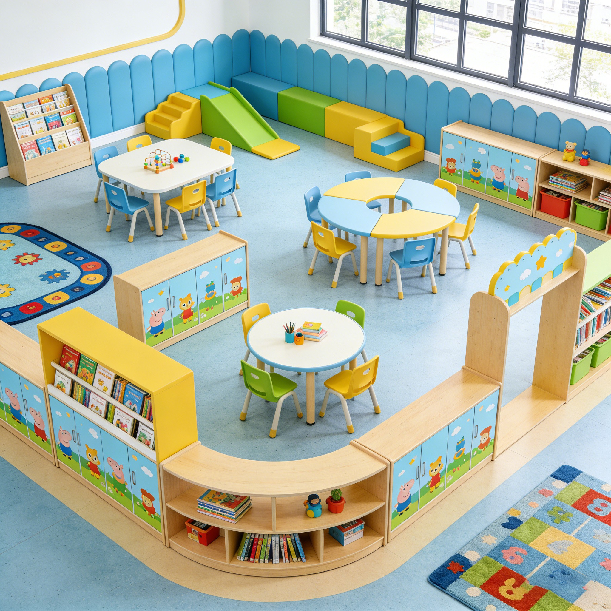

El atril de madera aporta un toque elegante al estudio en casa: la superficie inclinada sostiene los apuntes a la altura de los ojos para leer sin forzar el cuello, y la balda guarda libros y material a mano. Es ideal para estudiantes que preparan oposiciones, para la lectura prolongada de libros de gran formato y para las presentaciones en videollamadas de teletrabajo. La altura ajustable se adapta al escritorio o a la postura de cada persona, y el acabado en madera natural encaja en cualquier rincón del hogar.
La superficie inclinada coloca los apuntes a la altura de los ojos, reduciendo la tensión del cuello y la espalda durante las horas de estudio. Los estudiantes de oposiciones y los lectores habituales notan la diferencia en las sesiones largas.
La balda inferior guarda los libros, el cuaderno y el material de estudio al alcance de la mano. El orden en la mesa de trabajo mejora la concentración y evita interrupciones durante la preparación de exámenes.
La altura regulable se adapta a cada persona y a cada escritorio. El atril se coloca sobre la mesa o directamente sobre el suelo según la preferencia, manteniendo siempre una postura ergonómica.
El acabado en madera natural aporta calidez y elegancia a cualquier rincón del hogar. Cuando no se usa, se puede doblar y guardar en un armario sin ocupar espacio.
Es perfecto para las videollamadas de teletrabajo: coloca la cámara y los apuntes a la altura adecuada para presentar con naturalidad y profesionalidad desde casa.
| Modelo | Uso | Ajuste | Espacio |
|---|---|---|---|
| Atril de lectura | Libros y apuntes | Fijo | Mesas de estudio |
| Atril regulable | Estudio intensivo | Altura ajustable | Opositores y lectores |
| Atril de escritorio | Videollamadas | Regulable | Teletrabajo |
| A medida | Personalizado | Configurable | Hogares singulares |
| Material | Madera maciza con acabado natural |
| Altura | Ajustable según modelo |
| Superficie | Inclinada con borde antideslizante |
| Balda | Para libros y material |
| Plegable | Sí, en los modelos de lectura |
| Montaje | Manual ilustrado, 15-20 minutos |
| Garantía | 2 años en estructura |
Estudio en casa: atril para preparar oposiciones y exámenes con los apuntes a la altura de los ojos.
Lectura prolongada: soporte para libros de gran formato y partituras sin sujetarlos con las manos.
Teletrabajo: presentaciones y videollamadas con los apuntes y la cámara a la altura adecuada.
Sí, el atril se apoya sobre la mesa, el suelo o cualquier superficie plana gracias a sus patas antideslizantes. Los protectores de las patas evitan rayones en el mueble y mantienen la estabilidad durante el uso.
La balda y la superficie inclinada soportan hasta 15 kg de carga, suficiente para libros de texto grandes, diccionarios y carpetas de estudio completas.
Los modelos de lectura se pliegan y se guardan en menos de un minuto. Los modelos regulables de escritorio tienen las patas desmontables, ocupando muy poco espacio en el armario.
Este producto también está disponible en versión profesional para colegios e instituciones: Ver versión escolar →
Reciba información detallada de todos nuestros productos de mobiliario escolar.
📋 Solicitar catálogo